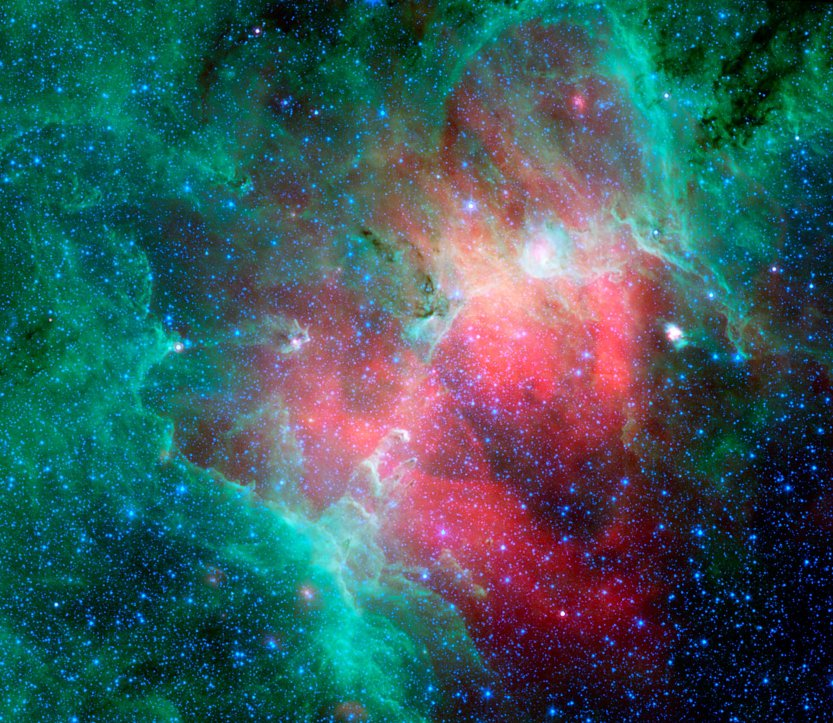
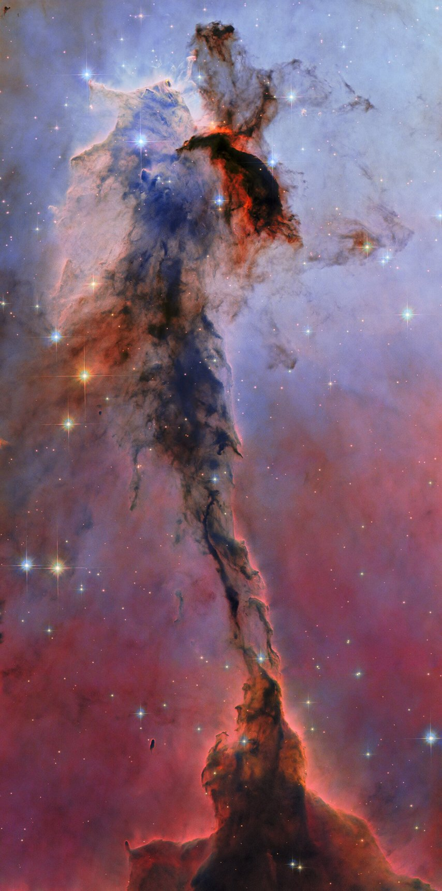
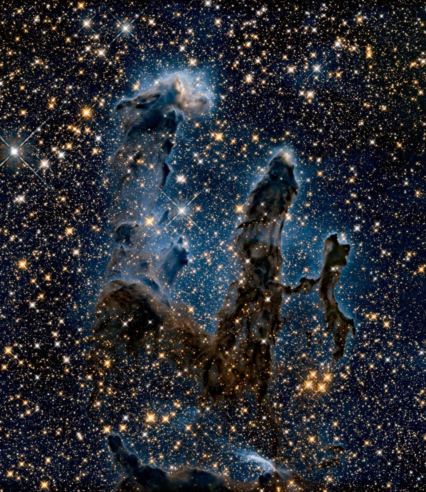
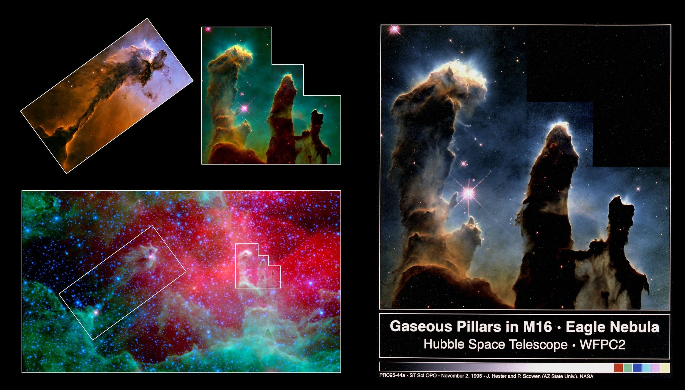

Both of M16s names refer to visual impressions of the dark silhouette near the center of the nebula known as the Pillars of Creation after the image of the area named such in 1995. The Eagle can be seen In the bright areas, the silhouette separating the wings and legs. The Star Queen can be seen in the silhouette itself. Messier 16, also catalogued as NGC 6611, is a young (estimated 1-2 million years) open cluster of stars in the Serpens constellation. It lies in the Sagittarius arm of the Milky Way. A spire of hydrogen gas that can be seen coming off the nebula in the north-eastern part is approximately 9.5 light-years, or about 90 trillion kilometers, long.
The image to the right is a three-colour composite in the visible range (RVB) of the Eagle nebula based on images obtained with the Wide-Field Imager camera on the MPG/ESO 2.2-metre telescope at the La Silla Observatory. Hover over it to see the same view in infrared light captured by Spitzer's infrared array camera and multiband imaging photometer (IRAC + MIPS).


The Spire
Though this towering structure of billowing gas and dark, obscuring dust is only a small portion of the Eagle Nebula (Messier 16), it is no less majestic in appearance for it. The pillar rises 9.5 light-years tall and is 7,000 light-years away from Earth. This latest Hubble view uses new processing techniques and is part of ESA/Hubble’s 35th anniversary celebrations.
The cosmic cloud is primarily cold hydrogen gas, like the rest of the Eagle Nebula. In regions like this, new stars are born among the collapsing clouds. Hot, energetic, and formed in great numbers, the young stars unleash an onslaught of ultraviolet light and stellar winds that sculpt the gas clouds around them. This produces fanciful shapes like the narrow pillar with a blossoming head that we see here. The material in the pillar is thick and opaque to light; its edges outlined by the glow of more distant gas behind it. Emission from ionized oxygen dominates the blue colors of the background; the red colors lower down, glowing hydrogen. Orange indicates starlight that managed to break through the dark dust which blocks bluer wavelengths more easily leaving the redder light to pass through.
The stars responsible for carving this intricate structure lie just out of view, at the Eagle Nebula’s center. As their radiation pressure batters and compresses the gas in this tower of clouds, it could be igniting further star formation within the pillar. While the pillar withstood these forces well so far, cutting an impressive shape against the background, the radiation pressure from the multitude of new stars that form in the Eagle Nebula will eventually erode it away.
ESA/Hubble & NASA, K. Noll Eagle Nebula Pillar
Pillars of Creation
The Pillars of Creation get their name from a photograph taken with the Hubble Space Telescope by astronomers Jeff Hester and Paul Scowen (bottom right). It depicts elephant trunks of interstellar hydrogen gas and dust in M16. These had been discovered in 1920 by John Duncan Charles on a plate made with the Mount Wilson Observatory 60” telescope. They are called that, because the gas and dust are in the process of creating new stars while, at the same time, being eroded by the light from nearby stars that have recently formed.
The original photo was composed of 32 different images from four CCD sensors in Hubble’s Wide Field and Planetary Camera 2 with an SHO mapping - Red for singly ionized sulfur, green for hydrogen alpha emissions and blue for double-ionized oxygen atoms. A higher resolution image was captured in 2014 (revealed January 2015) in celebration of Hubble’s 25th anniversary (right-hand image). Both the visible light photo and the infrared photo was captured by the WFC3, installed in 2009 replacing WFC2. Below you can also see the mappings of the spire and the pillars of creation.


The pillars of the Eagle nebula, as seen in infrared light by
NASA's Spitzer Space Telescope (bottom) and visible light by NASA's Hubble Space Telescope (top insets).
Credit: NASA/JPL-Caltech/STScI/ Institut d'Astrophysique Spatiale
(source)
This image was taken on April 1, 1995 with the Hubble Space Telescope Wide Field Planetary Camera 2.
Red shows emissions from singly-ionized sulfur atoms, green shows emissions from hydrogen, and blue shows light emitted by doubly-ionized oxygen atoms.
Credit: J. Hester & P. Scowen (AZ State Uni.)/NASA
(source)